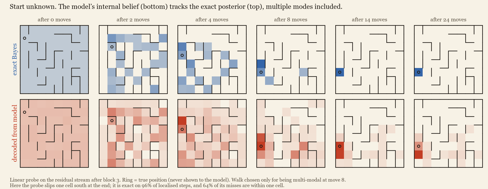
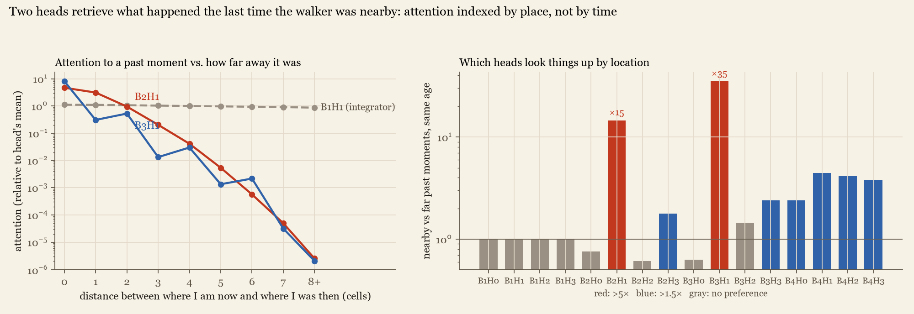
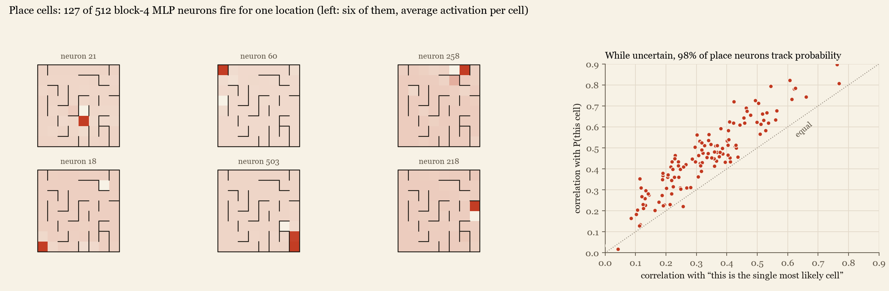
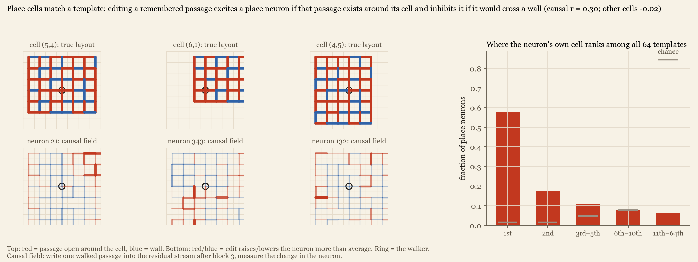
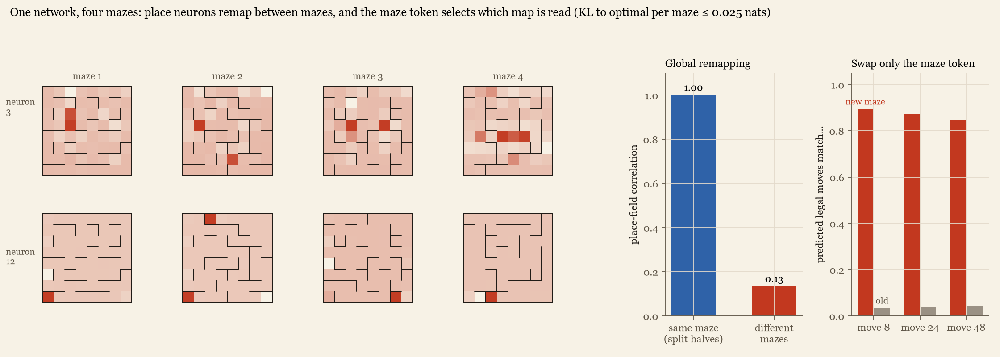
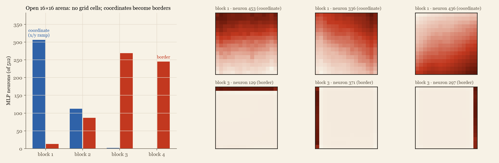

Belief tracking, egocentric localisation and probabilistic place cells in a 0.8M-parameter GPT
N E S W); the start cell
is given in a third of sequences and unknown in the rest. Because the walker chooses uniformly among open directions, the
Bayes-optimal next-move distribution and the exact posterior over the walker's cell are computable, which gives ground truth
for both behaviour and internal state. The model comes within 0.006 nats of the optimal loss. Its residual stream contains a
linearly decodable belief over all 64 cells (KL 0.10 nats to the exact posterior, 98.7% cell accuracy once localised).
That belief is causal: steering it to another cell changes the predicted legal moves to that cell's 90% of the time (random
edits: 4%), and steering to every cell in turn recovers all 112 interior walls of the maze from the model alone. Mechanistically,
one uniform-attention head integrates moves into a displacement. Middle layers then hold an egocentric sketch of walked passages, and
editing a single remembered passage shifts the belief between candidate cells in the direction a map-matching account predicts.
Location is recomputed from the move history at every token rather than carried forward. Early layers lay the cells out as a
flat sheet in grid coordinates; the last MLP contains place cells whose activity tracks the posterior probability of their cell.
Results replicate on three further mazes and a 12×12 maze, survive walking policies never seen in training, and extend to a
"slippery" world where the belief must stay graded even when the start is known. Trained on four mazes at once, the model's place neurons
remap between mazes, and a maze token selects which stored map is read. In an open arena the model develops border cells rather than
grid cells.Whether sequence models trained on next-token prediction build internal models of the process that generated their data is a central question in interpretability. Board-game studies found decodable and causally editable board states in Othello-playing transformers [1, 2]. Work on hidden Markov processes showed that residual streams can encode Bayesian belief states [3]. A study of real taxi routes found that strong next-token prediction can coexist with an incoherent map [4]. Navigation is a natural middle ground. It has a spatial latent that can be drawn, a known neuroscience of path integration and place cells [5, 6, 7], and, when the generating process is chosen carefully, an exactly computable optimal observer.
We build such a setting and push it as far as a single small model allows: from behaviour to linear representations, to causal edits, to an end-to-end readout of the whole environment, and finally to heads, neurons and the geometry of the representation.
World. A randomised depth-first-search maze on an 8×8 grid, with 35% of remaining interior walls removed so that the maze has
loops. Data. Uniform random walks of 64 moves. A sequence is [start, m₁, …, m₆₄], where start is either
the start cell (35%) or an "unknown" token. Model. A pre-LayerNorm GPT with 4 blocks, d=128, 4 heads, learned positions and a
4-way output head (811k parameters), trained for 20k steps of batch 256 with next-token cross-entropy on sampled moves (≈330M
tokens; 7.5 minutes on a laptop GPU). Ground truth. With uniform choice among open sides, the posterior over the current cell after
moves m₁..mt follows the exact recursion bt(c′) ∝ Σc bt−1(c)·P(mt|c)·[c′ = next(c, mt)],
and the optimal predictive distribution is Σc bt(c)·P(m|c). We verify the filter against brute-force enumeration over
start cells, and in the slippery variant over every slip pattern.

The model reaches cross-entropy 0.9929 nats against the optimal 0.9888, a KL of 0.0001 nats per move with a known start and 0.006 with an unknown start. We fit linear probes at the nine points of the residual stream (Fig. 2). Displacement since the start is linear after block 1 (R² 0.97), then fades. A 64-way softmax probe trained against the exact posterior falls from KL 3.42 (embedding) to 0.10 (block 4 attention), with 98.7% top-1 accuracy once localised. It stays at KL 0.31 on steps where the posterior is still spread over several cells. Decoding the posterior from the model's own output distribution with an MLP gives only KL 1.64, so the stream carries far more than the 4-way prediction requires. A randomly initialised network of the same shape gives KL ≈3.3 at every layer.
On walks where the posterior is certain the walker is in cell c, we edit the newest token's residual vector only, toward a random
cell c′ with different open sides. Success means the set of moves given more than 10% probability equals the open sides of c′.
Moving along the probe direction, x + α‖μc′ − μc‖·unit(Wc′ − Wc), succeeds 90% of the time after
block 3 at α = 2 (random direction of equal norm: 3.5%), with a dose-response that peaks and then declines. Replacing the whole vector
with one from a walk that ends at c′ succeeds 10%, 18%, 34%, 74% and 100% of the time at successive depths. Before block 3, later
layers re-derive location from the history and overwrite edits at a single token. A minimum-norm edit W⁺(z′ − z) that swaps two probe
logits fails (≤6%). It also constrains the other 62 logits, which pulls the edit away from the directions the network reads.
Steering to each of the 64 cells and recording the allowed moves recovers all 112 interior walls. The edit does not persist: if the walk continues with a move legal from c′, the next prediction ignores the edit (14% vs 14% unsteered). Location is recomputed at every token, a parallel style of computation consistent with analyses of fixed-depth transformers [8].

Rejected hypothesis. A natural parallel algorithm has each token mark the start cells its own move rules out and later layers average these exclusion masks. The single-step mask is not linearly decodable (balanced accuracy 0.58 vs 0.51 at random init). The cumulative set of surviving starts is only weakly recoverable even with an MLP probe (0.87 vs 0.77).
Egocentric sketch. What is decodable is a window of the walk relative to the walker's current position: which offsets have been visited and which passages walked. It peaks in block 3 (balanced accuracy 0.89 and 0.84, vs ≈0.6 at random init) and declines as the maze-frame position takes over. To test use, we take moments with exactly two candidate cells, A (true) and B, and write "this passage was walked" into the residual stream after block 3, for a passage not yet walked. A passage that exists only around B shifts P(B)/(P(A)+P(B)) by +0.28 ± 0.01 at α = 8. One that exists only around A shifts it by −0.11 ± 0.01, and one that exists around both by +0.06 ± 0.01 (n = 600). The opposite signs are what a map-matching mechanism predicts.

Heads. Mean-ablating single heads separates roles. Block-1 head 1 attends almost exactly uniformly (normalised entropy 0.999) and is the integrator: ablating it raises known-start KL from 0.0001 to 0.92. Block-1 head 3 reads the start token. Nine heads, concentrated in blocks 2 and 3, cost 7–80× more when the start is unknown than when it is given. Two of them attend by location: relative to past tokens of the same age, B2H1 and B3H1 put 15× and 35× more attention on moments when the walker was within one cell of its current position, and their attention falls about six orders of magnitude between distance 0 and 8. Their queries and keys both encode displacement linearly (R² 0.91–0.96); B2H0 encodes it equally well without attending by place, so the lookup depends on query–key alignment. They retrieve the history at the current place, the input the egocentric sketch needs (Fig. 5b).


Averaging activations per cell over localised moments gives 64 points per layer. After block 1 two principal components carry 85% of their variance and redraw the maze as an intact sheet. Representational distances track grid distance (Spearman 0.90). Walking distance adds nothing given grid distance (partial 0.01), while grid distance adds a lot given walking distance (0.72), so this is a coordinate map, not a graph. By block 4 the grid structure is gone (0.02) and cells group by their wall configuration (0.49), the format needed for the output.

Location-selective MLP neurons appear with depth: 0, 1, 18 and 127 of 512 in blocks 1–4. A neuron counts as a place cell if its cell explains most of its variance, far more than the cell's wall configuration does, within a compact field. When the model is uncertain, these neurons follow the posterior probability of their cell (mean r = 0.45) more closely than an indicator of the most likely cell (0.33) or of the true cell (0.24), for 98% of them. This graded code resembles probabilistic population codes proposed for Bayesian computation in the brain [9].
Template matching. If a place neuron for cell c performs the match, walked passages that exist around c should excite it and passages that would cross a wall there should inhibit it. Ridge regressions of 64 strong place neurons on the 98 egocentric passage features give receptive fields that correlate with the layout around the neuron's own cell (r = 0.79; other cells -0.01; own cell best of 64 for 92%). Because a neuron that merely fires at c would show the same pattern, we also measure causal receptive fields by writing each passage feature into the residual stream after block 3. They still single out the own cell (r = 0.30 vs -0.02; best of 64 for 58%, chance 1.6%), though more weakly (Fig. 8).


| maze | KL to optimal (given / unknown) | probe cell acc. | steering (random) | walls | persistence |
|---|---|---|---|---|---|
| 8×8, seed 0 | 0.0001 / 0.0062 | 98.7% | 90% (4%) | 112/112 | 14% / 14% |
| 8×8, seed 1 | 0.0001 / 0.0054 | 98.4% | 84% (3%) | 112/112 | 14% / 14% |
| 8×8, seed 2 | 0.0001 / 0.0052 | 98.9% | 89% (3%) | 112/112 | 12% / 12% |
| 8×8, seed 3 | 0.0001 / 0.0058 | 98.1% | 82% (4%) | 112/112 | 14% / 14% |
| 12×12, seed 0 | 0.0002 / 0.0131 | 96.4% | 80% (4%) | 261/264 | 12% / 12% |
Each row is an independent model and maze. On walks that never backtrack, or that keep their heading 80% of the time, the predicted legal set stays correct (99.8% with a known start; 98.7–98.8% after localisation from an unknown start): the model learned the maze, not the walk statistics. Depth helps localisation far more than dead reckoning: unknown-start KL falls 0.21 → 0.044 → 0.015 → 0.006 → 0.0026 for 1, 2, 3, 4 and 6 blocks, while one block already reaches 0.003 with a known start.
In a slippery variant, 15% of moves silently fail, so the posterior stays uncertain even with a known start. The model reaches 0.014 nats of the optimum. A linear probe recovers the posterior with KL 0.42 (time-only baseline 2.63; slip-unaware dead reckoning 7.5), and its entropy follows the true entropy step by step (r = 0.75). The linear readout is more diffuse than the truth (+0.42 nats); an MLP readout reaches KL 0.32 and +0.17 nats, so most of the blur is the probe's.
A model of the same size trained on four mazes, with a maze token at the start of each sequence, learns all four maps (KL 0.0002–0.0002 known start, 0.015–0.025 unknown). About 220 of 512 last-layer neurons have compact place fields in each maze. Neurons with fields in two mazes show nearly unrelated fields (mean correlation 0.13, against 1.00 for split halves within a maze; same preferred cell 5%–24%, chance 1.6%), resembling global remapping of hippocampal place cells between environments. With a known start the position is maze-independent. Swapping only the maze token makes predictions follow the new maze's walls 85%–89% of the time (old maze 3–4%): a shared position code is read against whichever map the context selects.

In a 16×16 arena without internal walls (128-move walks, known start) the model dead-reckons almost perfectly, but no MLP neuron shows grid-like periodic tuning: the firing maps with the most concentrated spatial spectra are edge maps. Linear coordinate ramps (x/y explains ≥70% of the firing map) dominate block 1 (306 of 512) and vanish by block 3 (2). Border cells (correlation ≥0.7 with being at a wall) rise from 13 to 269. RNN grid codes are usually explained as efficient recurrent path integration [5, 6]; a transformer that sums the whole history in one attention step evidently does not need them. Border cells, which also occur in rodent entorhinal cortex [10], are the layout that matters for legal moves in an open room.

All models share one architecture and small worlds, and the mechanistic analyses (Sections 5–6) were run on one maze. The matching step, where MLPs in blocks 3–4 compare the egocentric sketch with the stored maze, is only partly explained by the causal template effect, and the block-3 computation feeding the place neurons is untraced. Steering uses class-mean distances, computed with ground-truth labels, to set the edit size. Uniform random walks are friendly data, and the clean picture here may not survive partial observability or real trajectories [4].